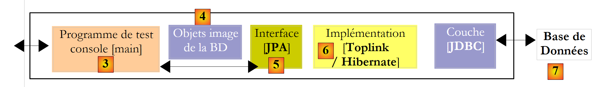
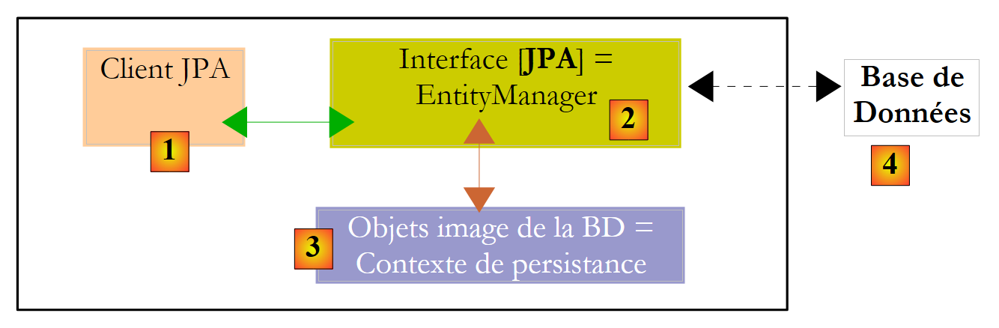
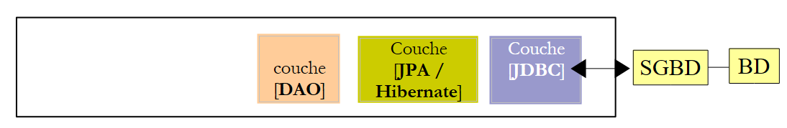
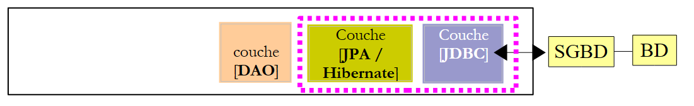
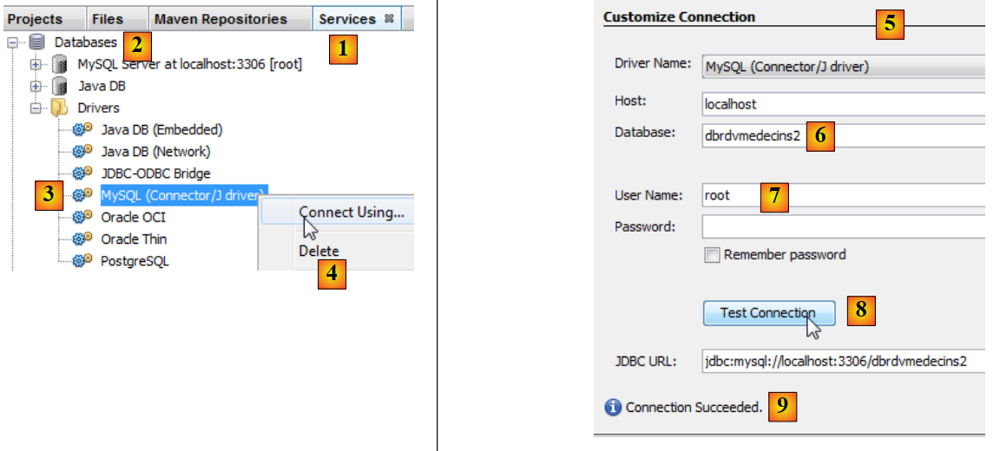
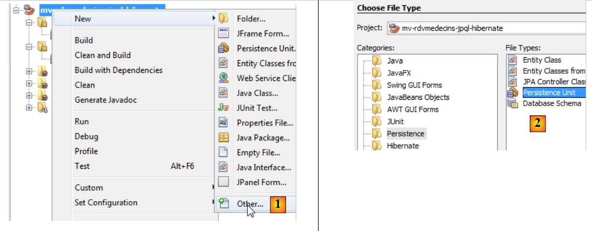
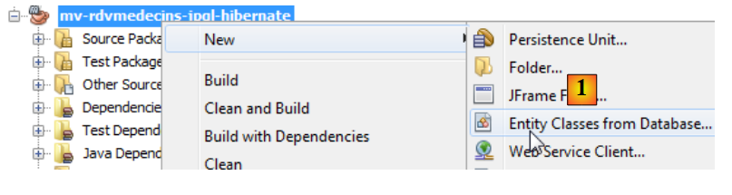

4. JPA : A Summary
We propose to introduce JPA (Java Persistence API) with a few examples. JPA is covered in the course:
- Java 5 Persistence in Practice: [http://tahe.developpez.com/java/jpa] - provides the tools to build the data access layer with JPA
4.1. The role of JPA in a layered architecture
The reader is invited to review the beginning of this document (paragraph 2), which explains the role of the JPA layer in a layered architecture. The JPA layer fits into the data access layers:
 |
The [DAO] layer interfaces with the JPA specification. Regardless of the product that implements it, the interface of the JPA layer presented to the [DAO] layer remains the same. Below, we present a few examples from [ref1] that will allow us to build our own JPA layer.
4.2. JPA - examples
4.2.1. Example 1 - Object representation of a single table
4.2.1.1. The [personne] table
Consider a database with a single table, [personne], whose purpose is to store some information about individuals:
 |
primary key of the table | |
version of the row in the table. Each time the person is modified, their version number is incremented. | |
person's last name | |
first name | |
their date of birth | |
integer 0 (unmarried) or 1 (married) | |
number of children |
4.2.1.2. The entity [Personne]
We are in the following runtime environment:
 |
The JPA [5] layer must bridge the relational world of the [7] database and the [4] object world manipulated by the [3]. This bridge is established through configuration, and there are two ways to do this:
- using XML files. This was virtually the only way to do it until the advent of JDK 1.5
- using Java annotations since JDK 1.5
In this document, we will use only the second method.
The [Personne] object representing the [personne] table presented earlier could be as follows:
...
@SuppressWarnings("unused")
@Entity
@Table(name="Personne")
public class Personne implements Serializable{
@Id
@Column(name = "ID", nullable = false)
@GeneratedValue(strategy = GenerationType.AUTO)
private Integer id;
@Column(name = "VERSION", nullable = false)
@Version
private int version;
@Column(name = "NOM", length = 30, nullable = false, unique = true)
private String nom;
@Column(name = "PRENOM", length = 30, nullable = false)
private String prenom;
@Column(name = "DATENAISSANCE", nullable = false)
@Temporal(TemporalType.DATE)
private Date datenaissance;
@Column(name = "MARIE", nullable = false)
private boolean marie;
@Column(name = "NBENFANTS", nullable = false)
private int nbenfants;
// manufacturers
public Personne() {
}
public Personne(String nom, String prenom, Date datenaissance, boolean marie,
int nbenfants) {
setNom(nom);
setPrenom(prenom);
setDatenaissance(datenaissance);
setMarie(marie);
setNbenfants(nbenfants);
}
// toString
public String toString() {
...
}
// getters and setters
...
}
Configuration is performed using Java @Annotation annotations. Java annotations are either processed by the compiler or by specialized tools at runtime. Aside from the annotation on line 3 intended for the compiler, all annotations here are intended for the JPA implementation being used, Hibernate, or TopLink. They will therefore be processed at runtime. In the absence of tools capable of interpreting them, these annotations are ignored. Thus, the [Personne] class above could be used in a non-JPA context.
There are two distinct cases for using JPA annotations in a C class associated with a table T:
- the table T already exists: the JPA annotations must then replicate the existing structure (column names and definitions, integrity constraints, foreign keys, primary keys, etc.)
- Table T does not exist and will be created based on the annotations found in class C.
Case 2 is the easiest to handle. Using the annotations JPA, we specify the structure of the table T we want. Case 1 is often more complex. The table T may have been created a long time ago, outside of any JPA context. Its structure may therefore be ill-suited to the relational/object bridge of JPA. To simplify matters, we will consider case 2, where the table T associated with class C will be created based on the annotations JPA of class C.
Let’s comment on the annotations of class [Personne]:
- line 4: the @Entity annotation is the first required annotation. It is placed before the line declaring the class and indicates that the class in question must be managed by the JPA persistence layer. Without this annotation, all other annotations would be ignored.
- Line 5: The @Table annotation designates the database table that the class represents. Its main argument is name, which specifies the table name. If this argument is omitted, the table will be named after the class, in this case [Personne]. In our example, the @Table annotation is therefore redundant.
- Line 8: The @Id annotation is used to designate the field in the class that maps to the table’s primary key. This annotation is required. Here, it indicates that the id field on line 11 maps to the table’s primary key.
- Line 9: The @Column annotation is used to link a field in the class to the table column that the field maps to. The name attribute specifies the name of the column in the table. If this attribute is omitted, the column has the same name as the field. In our example, the argument name was therefore not required. The argument nullable=false indicates that the column associated with the field cannot have the value NULL and that the field must therefore have a value.
- Line 10: The annotation @GeneratedValue specifies how the primary key is generated when it is automatically generated by SGBD. This will be the case in all our examples. This is not mandatory. Thus, our person could have a student ID that serves as the primary key and is not generated by SGBD but is set by the application. In this case, the annotation @GeneratedValue would be absent. The strategy argument specifies how the primary key is generated when generated by the SGBD. Not all SGBDs use the same technique for generating primary key values. For example:
uses a value generator called before each insertion | |
the primary key field is defined as having the Identity type. The result is similar to Firebird’s value generator, except that the key value is not known until after the row is inserted. | |
uses an object called SEQUENCE, which again acts as a value generator |
The JPA layer must generate different SQL commands depending on the SGBD to create the value generator. It is configured to specify the type of SGBD it must handle. As a result, it can determine the standard strategy for generating primary key values for this SGBD. The argument strategy = GenerationType.AUTO tells the JPA layer that it must use this standard strategy. This technique worked in all the examples in this document for the seven SGBD instances used.
- Line 14: The @Version annotation designates the field used to manage concurrent access to the same row in the table.
To understand this issue of concurrent access to the same row in the [personne] table, let’s assume that a web application allows a person’s information to be updated and examine the following scenario:
At time T1, user U1 begins editing a person P. At this point, the number of children is 0. They change this number to 1, but before they save their changes, user U2 begins editing the same person P. Since U1 has not yet saved their changes, U2 sees the number of children as 0 on their screen. U2 changes the name of person P to uppercase. Then U1 and U2 save their changes in that order. U2’s change will take precedence: in the database, the name will be in uppercase and the number of children will remain at zero, even though U1 believes they changed it to 1.
The concept of a person helps us solve this problem. Let’s revisit the same use case:
At time T1, user U1 enters edit mode for a person P. At this point, the number of children is 0 and the version is V1. They change the number of children to 1, but before they save their changes, a user U2 begins editing the same person P. Since U1 has not yet saved their changes, U2 sees the number of children as 0 and the version as V1. U2 changes the name of person P to uppercase. Then U1 and U2 save their changes in that order. Before saving a change, the system verifies that the user modifying person P holds the same version as the currently recorded person P. This will be the case for user U1. Their modification is therefore accepted, and we then change the version of the modified person from V1 to V2 to indicate that the person has undergone a change. When validating U2’s modification, we will notice that U2 holds a version V1 for person P, whereas person P’s current version is V2. We can then inform user U2 that someone else has acted before them and that they must start over with person P’s new version. They will do so, retrieve person P with version V2—who now has a child—convert the name to uppercase, and validate. His modification will be accepted if the registered person P still has version V2. Ultimately, the modifications made by U1 and U2 will be taken into account, whereas in the use case without version, one of the modifications was lost.
The [DAO] layer of the client application can manage the version of the [Personne] class on its own. Whenever an object P is modified, the version for that object is incremented by 1 in the table. The @Version annotation allows this management to be transferred to the JPA layer. The field in question does not need to be named version as in the example. It can have any name.
The fields corresponding to the annotations @Id and @Version are present because of persistence. They would not be needed if the class [Personne] did not need to be persisted. We can see, therefore, that an object is represented differently depending on whether or not it needs to be persisted.
- Line 17: Once again, the @Column annotation provides information about the column in the [personne] table associated with the name field of the Person class. Here we find two new arguments:
- unique=true indicates that a person’s name must be unique. This will result in the addition of a uniqueness constraint on the NOM column of the [personne] table in the database.
- length=30 sets the number of characters in the NOM column to 30. This means that the type of this column will be VARCHAR(30).
- Line 24: The @Temporal annotation is used to specify the SQL type for a column or field of the date/time type. The TemporalType.DATE type denotes a date alone without an associated time. The other possible types are TemporalType.TIME for encoding a time and TemporalType.TIMESTAMP for encoding a date with a time.
Let’s now comment on the rest of the code for the [Personne] class:
- line 6: the class implements the Serializable interface. Serializing an object involves converting it into a sequence of bits. Deserialization is the reverse operation. Serialization/deserialization is particularly used in client/server applications where objects are exchanged over the network. Client or server applications are unaware of this operation, which is performed transparently by the JVM. For this to be possible, however, the classes of the exchanged objects must be "tagged" with the Serializable keyword.
- Line 37: a constructor for the class. Note that the fields id and version are not included in the parameters. In fact, these two fields are managed by the JPA layer and not by the application.
- Lines 51 and beyond: the set methods for each of the class’s fields. Note that JPA annotations can be placed on the get methods of the fields instead of on the fields themselves. The placement of the annotations indicates the mode that JPA must use to access the fields:
- if the annotations are placed at the field level, JPA will access the fields directly to read or write them
- if the annotations are placed at the get level, JPA will access the fields via the get / set methods to read or write them
It is the position of the @Id annotation that determines the position of the JPA annotations in a class. When placed at the field level, it indicates direct access to the fields; when placed at the get level, it indicates access to the fields via get and set. The other annotations must then be placed in the same way as the @Id annotation.
4.2.2. Configuration of the JPA layer
Tests for the JPA layer can be performed using the following architecture:
 |
- in [7]: the database that will be generated from the annotations of the [Personne] entity as well as additional configurations made in a file named [persistence.xml]
- in [5, 6]: a JPA layer implemented by Hibernate
- in [4]: the [Personne] entity
- to [3]: a console-based test program
The configuration of the JPA layer is handled by the [META-INF/persistence.xml] file:
 |
At runtime, the file [META-INF/persistence.xml] is searched for in the application’s classpath.
Let’s examine the configuration of the JPA layer defined in the [persistence.xml] file of our project:
<?xml version="1.0" encoding="UTF-8"?>
<persistence version="1.0" xmlns="http://java.sun.com/xml/ns/persistence">
<persistence-unit name="jpa" transaction-type="RESOURCE_LOCAL">
<!-- provider -->
<provider>org.hibernate.ejb.HibernatePersistence</provider>
<properties>
<!-- Persistent classes -->
<property name="hibernate.archive.autodetection" value="class, hbm" />
<!-- logs SQL
<property name="hibernate.show_sql" value="true"/>
<property name="hibernate.format_sql" value="true"/>
<property name="use_sql_comments" value="true"/>
-->
<!-- connection JDBC -->
<property name="hibernate.connection.driver_class" value="com.mysql.jdbc.Driver" />
<property name="hibernate.connection.url" value="jdbc:mysql://localhost:3306/jpa" />
<property name="hibernate.connection.username" value="jpa" />
<property name="hibernate.connection.password" value="jpa" />
<!-- automatic schematic creation -->
<property name="hibernate.hbm2ddl.auto" value="create" />
<!-- Dialect -->
<property name="hibernate.dialect" value="org.hibernate.dialect.MySQL5InnoDBDialect" />
<!-- properties DataSource c3p0 -->
<property name="hibernate.c3p0.min_size" value="5" />
<property name="hibernate.c3p0.max_size" value="20" />
<property name="hibernate.c3p0.timeout" value="300" />
<property name="hibernate.c3p0.max_statements" value="50" />
<property name="hibernate.c3p0.idle_test_period" value="3000" />
</properties>
</persistence-unit>
</persistence>
To understand this configuration, we need to review the data access architecture of our application:
 |
- The file [persistence.xml] will configure the layers [4, 5, 6]
- [4]: Hibernate implementation of JPA
- [5]: Hibernate accesses the database via a connection pool. A connection pool is a pool of open connections to SGBD. A SGBD is accessed by multiple users, even though, for performance reasons, it cannot exceed a limit N of open connections simultaneously. Well-written code opens a connection to the SGBD for the minimum amount of time: it issues SQL commands and closes the connection. It will do this repeatedly, every time it needs to work with the database. The cost of opening and closing a connection is not negligible, and this is where the connection pool comes into play. Upon application startup, the connection pool will open N1 connections with the SGBD. The application will request an open connection from the pool whenever it needs one. The connection will be returned to the pool as soon as the application no longer needs it, preferably as quickly as possible. The connection is not closed and remains available for the next user. A connection pool is therefore a system for sharing open connections.
- [6]: the JDBC driver for the SGBD used
Now let’s see how the [persistence.xml] file configures the [4, 5, 6] layers above:
- Line 2: The root tag of the XML file is <persistence>.
- line 3: <persistence-unit> is used to define a persistence unit. There can be multiple persistence units. Each of them has a name (name attribute) and a transaction type (transaction-type attribute). The application will access the persistence unit via its name, in this case jpa. The transaction type RESOURCE_LOCAL indicates that the application manages transactions itself using SGBD. This will be the case here. When the application runs in a EJB3 container, it can use that container’s transaction service. In this case, we will set transaction-type=JTA (Java Transaction API). JTA is the default value when the transaction-type attribute is absent.
- Line 5: The <provider> tag is used to define a class that implements the [javax.persistence.spi.PersistenceProvider] interface, which allows the application to initialize the persistence layer. Because we are using a JPA / Hibernate implementation, the class used here is a Hibernate class.
- Line 6: The <properties> tag introduces properties specific to the particular provider selected. Therefore, depending on whether you have chosen Hibernate, TopLink, Kodo, etc., you will have different properties. The following properties are specific to Hibernate.
- Line 8: Instructs Hibernate to scan the project’s classpath to find classes annotated with @Entity so that Hibernate can manage them. @Entity classes can also be declared using <class>nom_de_la_classe</class> tags, directly under the <persistence-unit> tag. This is what we will do with the JPA / Toplink provider.
- Lines 10–12, which are commented out here, configure Hibernate’s console logs:
- Line 10: to enable or disable the display of SQL commands issued by Hibernate on the SGBD. This is very useful during the learning phase. Because of the relational/object bridge, the application works on persistent objects to which it applies [persist, merge, remove]-type operations. It is very helpful to know which SQL commands are actually issued for these operations. By studying them, you gradually begin to guess the SQL commands that Hibernate will generate when performing such an operation on persistent objects, and the relational/object bridge begins to take shape in your mind.
- Line 11: The SQL commands displayed on the console can be formatted neatly to make them easier to read
- line 12: the displayed SQL commands will also be commented
- Lines 15–19 define the JDBC layer ([6] layer in the architecture):
- line 15: the driver class JDBC of SGBD, here MySQL5
- line 16: the url of the database used
- lines 17, 18: the connection user and their password
- line 22: Hibernate needs to know the SGBD it is dealing with. In fact, all SGBDs have proprietary SQL extensions, a specific way of managing the automatic generation of primary key values, ... which means that Hibernate needs to know the SGBD it is working with in order to send it the SQL commands that it will understand. [MySQL5InnoDBDialect] refers to the SGBD MySQL5 with InnoDB-type tables that support transactions.
- Lines 24–28 configure the c3p0 connection pool ([5] layer in the architecture):
- lines 24, 25: the minimum (default 3) and maximum number of connections (default 15) in the pool. The default initial number of connections is 3.
- line 26: maximum wait time in milliseconds for a connection request from the client. After this time, c3p0 will return an exception.
- line 27: to access BD, Hibernate uses prepared SQL commands (PreparedStatement) that c3p0 can cache. This means that if the application requests a prepared SQL command that is already in the cache a second time, it will not need to be prepared (preparing a SQL command incurs a cost), and the one in the cache will be used. Here, we specify the maximum number of prepared SQL orders that the cache can hold, across all connections (a prepared SQL order belongs to a single connection).
- Line 28: frequency in milliseconds for checking the validity of connections. A connection in the pool can become invalid for various reasons (the JDBC driver invalidates the connection because it has been open too long, the JDBC driver has "bugs," etc.).
- Line 20: Here, we specify that when the persistence unit is initialized, the database schema for the @Entity objects should be generated. Hibernate now has all the tools to issue the commands to generate the database tables:
- the configuration of the @Entity objects allows it to determine which tables to generate
- lines 15–18 and 24–28 allow it to establish a connection with the SGBD
- line 22 tells it which SQL dialect to use to generate the tables
Thus, the [persistence.xml] file used here recreates a new database each time the application is run. The tables are recreated (create table) after being dropped (drop table) if they existed. Note that this should obviously not be done on a production database...
4.2.3. Example 2: One-to-many relationship
4.2.3.1. The database schema file * *
1  | 2 |
- in [1], the database, and in [2], its DDL (MySQL5)
An item A (id, version, name) belongs to exactly one category C (id, version, name). A category C can contain 0, 1, or more items. There is a one-to-many relationship (Category -> Item) and the inverse many-to-one relationship (Item -> Category). This relationship is represented by the foreign key that the table [article] has on the table [categorie] (lines 24–28 of DDL).
4.2.3.2. The @Entity objects representing the database
An article is represented by the following @Entity [Article]:
package entites;
...
@Entity
@Table(name="jpa05_hb_article")
public class Article implements Serializable {
// fields
@Id
@GeneratedValue(strategy = GenerationType.AUTO)
private Long id;
@SuppressWarnings("unused")
@Version
private int version;
@Column(length = 30)
private String nom;
// main relationship Article (many) -> Category (one)
// implemented by a foreign key (categorie_id) in Article
// 1 Article must have 1 Category (nullable=false)
@ManyToOne(fetch=FetchType.LAZY)
@JoinColumn(name = "categorie_id", nullable = false)
private Categorie categorie;
// manufacturers
public Article() {
}
// getters and setters
...
// toString
public String toString() {
return String.format("Article[%d,%d,%s,%d]", id, version, nom, categorie.getId());
}
}
- lines 9-11: primary key of the @Entity
- lines 13-15: its version number
- lines 17-18: name of the article
- lines 20-25: many-to-one relationship linking the @Entity Article to the @Entity Category:
- line 23: the annotation ManyToOne. The Many refers to the @Entity Article in which we are located, and the One to the @Entity Category (line 25). A category (One) can have multiple articles (Many).
- line 24: the annotation ManyToOne defines the foreign key column in the table [article]. It will be named (name) categorie_id, and each row must have a value in this column (nullable=false).
- Line 25: the category to which the article belongs. When an article is placed in the persistence context, we request that its category not be added immediately (fetch=FetchType.LAZY, line 23). We do not know if this request makes sense. We will see.
A category is represented by the following @Entity [Categorie]:
package entites;
...
@Entity
@Table(name="jpa05_hb_categorie")
public class Categorie implements Serializable {
// fields
@Id
@GeneratedValue(strategy = GenerationType.AUTO)
private Long id;
@SuppressWarnings("unused")
@Version
private int version;
@Column(length = 30)
private String nom;
// inverse relationship Category (one) -> Article (many) from relationship Article (many) -> Category (one)
// cascade insertion Category -> insertion Articles
// cascade maj Category -> maj Articles
// cascade delete Category -> delete Articles
@OneToMany(mappedBy = "categorie", cascade = { CascadeType.ALL })
private Set<Article> articles = new HashSet<Article>();
// manufacturers
public Categorie() {
}
// getters and setters
...
// toString
public String toString() {
return String.format("Categorie[%d,%d,%s]", id, version, nom);
}
// bidirectional association Category <--> Article
public void addArticle(Article article) {
// the item is added to the collection of items in the category
articles.add(article);
// article changes category
article.setCategorie(this);
}
}
- lines 8-11: the primary key of the @Entity
- lines 12-14: its version
- lines 16-17: the category name
- lines 19-24: the set of items in the category
- line 23: the @OneToMany annotation denotes a one-to-many relationship. The "One" refers to the @Entity [Categorie] in which we are located, and the "Many" refers to the type [Article] on line 24: one (One) category has many (Many) items.
- Line 23: The annotation is the inverse (mappedBy) of the annotation ManyToOne applied to the *categorie* field of the @Entity *Article*: mappedBy=categorie. The relationship ManyToOne on the category field of the @Entity Article is the primary relationship. It is essential. It represents the foreign key relationship that links the @Entity Article to the @Entity Category. The relationship OneToMany on the articles field of the @Entity Category is the inverse relationship. It is not essential. It is a convenience for retrieving the articles in a category. Without this convenience, these articles would be retrieved via a JPQL query.
- Line 23: cascadeType.ALL specifies that operations (persist, merge, remove) performed on an @Entity Category should cascade to its articles.
- Line 24: The items in a category will be placed in an object of type Set<Article>. The Set type does not allow duplicates. Thus, the same item cannot be placed twice in the Set<Article> object. What does "the same item" mean? To indicate that item a is the same as item b, Java uses the expression a.equals(b). In the Object class, the parent of all classes, a.equals(b) is true if a==b, c.a.d, meaning that objects a and b have the same memory location. One might want to say that items a and b are the same if they have the same name. In this case, the developer must override two methods in the [Article] class:
- equals: which must return true if the two objects have the same name
- hashCode: must return an identical integer value for two objects [Article] that the equals method considers equal. Here, the value will therefore be constructed from the item’s name. The value returned by hashCode can be any integer. It is used in various object containers, notably dictionaries (Hashtable).
The OneToMany relationship can use types other than Set to store the Many, such as List objects. We will not cover these cases in this document. The reader can find them in [ref1].
- Line 38: The method [addArticle] allows us to add an article to a category. The method updates both ends of the OneToMany relationship that links [Categorie] to [Article].
4.3. The API of the JPA layer
Let’s explain the runtime environment of a JPA client:
 |
We know that the JPA layer creates an object-relational bridge between [3] and [4]. The set of objects managed by the JPA layer within the context of this object-relational bridge is called the "persistence context." To access data in the persistence context, a JPA [1] client must go through the JPA [2] layer:
- it can create an object and ask the JPA layer to make it persistent. The object then becomes part of the persistence context.
- it can ask the [JPA] layer for a reference to an existing persistent object.
- it can modify a persistent object obtained from the JPA layer.
- it can ask the JPA layer to delete an object from the persistence context.
The JPA layer provides the client with an interface called [EntityManager] which, as its name suggests, allows for the management of @Entity objects in the persistence context. Below are the main methods of this interface:
adds entity to the persistence context | |
removes entity from the persistence context | |
merges a client entity object not managed by the persistence context with the entity object from the persistence context that has the same primary key. The result returned is the entity object from the persistence context. | |
places an object retrieved from the database into the persistence context via its primary key. The type T of the object allows the JPA layer to know which table to query. The persistent object thus created is returned to the client. | |
creates a Query object from a JPQL query (Java Persistence Query Language). A JPQL query is analogous to a SQL query except that it queries objects rather than tables. | |
method similar to the previous one, except that queryText is a order SQL rather than JPQL. | |
method identical to createQuery, except that the order JPQL queryText has been externalized into a configuration file and associated with a name. This name is the method’s parameter. |
A EntityManager object has a lifecycle that is not necessarily the same as that of the application. It has a beginning and an end. Thus, a JPA client can work successively with different EntityManager objects. The persistence context associated with a EntityManager has the same lifecycle as it does. They are inseparable from one another. When a EntityManager object is closed, its persistence context is synchronized with the database if necessary, and then it no longer exists. A new EntityManager must be created to obtain a new persistence context.
The client JPA can create a EntityManager and thus a persistence context with the following statement:
EntityManagerFactory emf = Persistence.createEntityManagerFactory("nom d'une unité de persistance");
- javax.persistence.Persistence is a static class used to obtain a factory for EntityManager objects. This factory is linked to a specific persistence unit. Recall that the [META-INF/persistence.xml] configuration file allows you to define persistence units, each of which has a name:
<persistence-unit name="elections-dao-jpa-mysql-01PU" transaction-type="RESOURCE_LOCAL">
In the example above, the persistence unit is named elections-dao-jpa-mysql-01PU. It comes with its own specific configuration, including the SGBD with which it operates. The [Persistence.createEntityManagerFactory("elections-dao-jpa-mysql-01PU")] statement creates an object factory of type EntityManagerFactory capable of providing EntityManager objects intended to manage persistence contexts associated with the persistence unit named elections-dao-jpa-mysql-01PU. Obtaining a EntityManager object, and thus a persistence context, is done from the EntityManagerFactory object as follows:
The following methods of the [EntityManager] interface allow you to manage the lifecycle of the persistence context:
The persistence context is closed. Forces synchronization of the persistence context with the database:
| |
The persistence context is cleared of all its objects but not closed. | |
The persistence context is synchronized with the database as described for close() |
The JPA client can force the persistence context to synchronize with the database using the preceding [EntityManager].flush method. Synchronization can be explicit or implicit. In the first case, it is up to the client to perform flush operations when it wants to synchronize; otherwise, synchronization occurs at specific times that we will specify. The synchronization mode is managed by the following methods of the [EntityManager] interface:
There are two possible values for flushMode: FlushModeType.AUTO (default): synchronization occurs before each SELECT query made to the database. FlushModeType.COMMIT: synchronization occurs only at the end of transactions on the database. | |
returns the current synchronization mode |
Let’s summarize. In FlushModeType.AUTO mode, which is the default mode, the persistence context will be synchronized with the database at the following times:
- before each database operation
- at the end of a transaction on the database
- following a flush or close operation on the persistence context
In FlushModeType.COMMIT mode, the same applies except for operation 1, which does not occur. The normal mode of interaction with the JPA layer is transactional mode. The client performs various operations on the persistence context within a transaction. In this case, the points at which the persistence context is synchronized with the database are cases 1 and 2 above in AUTO mode, and case 2 only in COMMIT mode.
Let’s conclude with API from the Query interface, which allows you to issue JPQL commands on the persistence context or SQL commands directly on the database to retrieve data. The Query interface is as follows:
 |
- 1 - The getResultList method executes a SELECT that returns multiple objects. These will be obtained in a List object. This object is an interface. It provides an Iterator object that allows you to iterate through the elements of the list L in the following form:
Iterator iterator = L.iterator();
while (iterator.hasNext()) {
// use the iterator.next() object, which represents the current element in the list
...
}
The list L can also be iterated over using a for loop:
for (Object o : L) {
// exploit object o
}
- 2 - The getSingleResult method executes a JPQL / SQL / SELECT command that returns a single object.
- 3 - The executeUpdate method executes a SQL update or delete command and returns the number of rows affected by the operation.
- 4 - The method setParameter(String, Object) allows you to assign a value to a named parameter of a configured JPQL command
- 5 - The method setParameter(int, Object) uses the parameter not by name but by its position in the JPQL command.
4.4. queries JPQL
JPQL (Java Persistence Query Language) is the query language of the JPA layer. The JPQL language is related to the SQL language used in databases. While SQL works with tables, JPQL works with the image objects in those tables. We will examine an example within the following architecture:
 |
The database, which we will call [dbrdvmedecins2] , is a MySQL5 database with four tables:
 |
It contains information used to manage appointments for a group of doctors.
4.4.1. The table [MEDECINS]
It contains information about the doctors.
 |  |
- ID: ID number for the physician—primary key of the table
- VERSION: ID number for the version row in the table. This number is incremented by 1 each time a change is made to the row.
- NOM: the doctor's last name
- PRENOM: their first name
- TITRE: their title (Ms., Mrs., Mr.)
4.4.2. The [CLIENTS] table
The clients records for the various doctors are stored in the [CLIENTS] table:
 |  |
- ID: customer ID number—primary key of the table
- VERSION: number identifying the version of the row in the table. This number is incremented by 1 each time a change is made to the row.
- NOM: the customer's last name
- PRENOM: first name
- TITRE: their title (Ms., Mrs., Mr.)
4.4.3. The [CRENEAUX] table
It lists the time slots where RV entries are possible:
 |
 |
- ID: ID number for the time slot—primary key of the table (row 8)
- VERSION: number identifying the version for the row in the table. This number is incremented by 1 each time a change is made to the row.
- ID_MEDECIN: ID number for the doctor to whom this time slot belongs – foreign key on column MEDECINS (ID).
- HDEBUT: slot start time
- MDEBUT: slot start minutes
- HFIN: slot end time
- MFIN: slot end minutes
The second row of table [CRENEAUX] (see [1] above) indicates, for example, that slot No. 2 begins at 8:20 a.m. and ends at 8:40 a.m. and belongs to doctor No. 1 (Ms. Marie PELISSIER).
4.4.4. The table [RV]
lists the RV codes assigned to each doctor:
 |
- ID: ID number that uniquely identifies the RV – primary key
- JOUR: day of the RV
- ID_CRENEAU: time slot for RV – foreign key on the [ID] field in the [CRENEAUX] table – determines both the time slot and the doctor in question.
- ID_CLIENT: customer ID for whom the reservation is made – foreign key on the [ID] field in the [CLIENTS] table
This table has a uniqueness constraint on the values of the joined columns (JOUR, ID_CRENEAU):
If a row in table [RV] has the value (JOUR1, ID_CRENEAU1) for the columns (JOUR, ID_CRENEAU), this value cannot appear anywhere else. Otherwise, this would mean that two RV records were captured at the same time for the same doctor. From a Java programming perspective, the database driver JDBC triggers a SQLException when this occurs.
The id line equal to 3 (see [1] above) means that a RV was booked for slot #20 and client #4 on 08/23/2006. The table [CRENEAUX] tells us that slot no. 20 corresponds to the time slot 4:20 PM – 4:40 PM and belongs to doctor no. 1 (Ms. Marie PELISSIER). Table [CLIENTS] tells us that client #4 is Ms. Brigitte BISTROU.
4.4.5. Generating the database
To create the tables and populate them, you can use the script [dbrdvmedecins2.sql]. With [WampServer], you can proceed as follows:
 |
- In [1], click the [WampServer] icon and select option [PhpMyAdmin] [2],
- In [3], in the window that opens, select the link [Bases de données],
 |
- to [2], create a database named [4] with encoding [5],
- in [7], the database has been created. Click on its link,
 |
- in [8], import a file named SQL,
- which you select from the file system using the [9] button,
 |
- in [11], select the script SQL, and in [12], run it,
- in [13], the four database tables have been created. Follow one of the links,
 |
- in [14], the table contents.
We will not return to this database again. However, the reader is invited to follow its evolution throughout the programs, especially when things don’t work.
4.4.6. The [JPA] layer
Let’s return to the architecture of the example:
 |
We are now building the Maven project for the [JPA] layer.
4.4.7. The Netbeans project
It is as follows:
 |
- In [1], we build a Maven project of type [Java Application] [2],
- in [3], we name the project,
 |
- in [4], the generated project.
4.4.8. Generation of layer [JPA]
Let’s return to the architecture we need to build:
 |
With Netbeans, it is possible to automatically generate the layer [JPA]. It is useful to know these automatic generation methods because the generated code provides valuable insights into how to write JPA entities.
4.4.9. Creating a Netbeans connection to the database
- Run SGBD MySQL 5 so that BD is available,
- create a connection Netbeans to the database [dbrdvmedecins2],
 |
- in the [Services] [1] tab, in the [Databases] [2] branch, select the JDBC MySQL [3] driver,
- then select the "Connect Using" option in option [4] to create a connection to a database in MySQL,
- in [5], enter the requested information. In [6], enter the database name; in [7], enter the database user and password;
- in [8], you can test the information you provided,
- in [9], the expected message when the information is correct,
 |
- in [10], the connection is established. Here we see the four tables in the connected database.
4.4.10. Creating a persistence unit
Let’s return to the architecture currently under construction:
 |
We are currently building the [JPA] layer. Its configuration is defined in a [persistence.xml] file where persistence units are defined. Each of them requires the following information:
- the JDBC database access credentials (URL, username, password),
- the classes that will serve as the database table mappings,
- the JPA implementation used. In fact, JPA is a specification implemented by various products. Here, we will use Hibernate.
Netbeans can generate this persistence file using a wizard.
 |
- Right-click on the project and choose to create a persistence unit [1],
- in [2], create a persistence unit,
- in [3], name the persistence unit you are creating,
- in [4], select the Hibernate implementation JPA (JPA 2.0),
- in [5], indicate that the tables in BD have already been created and therefore will not be created again. We confirm the wizard,
- in [6], the new project,
- in [7], the file [persistence.xml] was generated in the folder [META-INF],
- in [8], new dependencies have been added to the Maven project.
The generated [META-INF/persistence.xml] file is as follows:
<?xml version="1.0" encoding="UTF-8"?>
<persistence version="2.0" xmlns="http://java.sun.com/xml/ns/persistence" xmlns:xsi="http://www.w3.org/2001/XMLSchema-instance" xsi:schemaLocation="http://java.sun.com/xml/ns/persistence http://java.sun.com/xml/ns/persistence/persistence_2_0.xsd">
<persistence-unit name="mv-rdvmedecins-jpql-hibernatePU" transaction-type="RESOURCE_LOCAL">
<provider>org.hibernate.ejb.HibernatePersistence</provider>
<properties>
<property name="javax.persistence.jdbc.url" value="jdbc:mysql://localhost:3306/dbrdvmedecins2"/>
<property name="javax.persistence.jdbc.password" value=""/>
<property name="javax.persistence.jdbc.driver" value="com.mysql.jdbc.Driver"/>
<property name="javax.persistence.jdbc.user" value="root"/>
<property name="hibernate.cache.provider_class" value="org.hibernate.cache.NoCacheProvider"/>
</properties>
</persistence-unit>
</persistence>
It includes the information provided in the wizard:
- line 3: the name of the persistence unit,
- line 3: the type of database transactions. Here, RESOURCE_LOCAL indicates that the application will manage its own transactions,
- lines 6–9: the JDBC properties of the data source.
In the [Design] tab, you can see an overview of the [persistence.xml] file:
 |
To obtain Hibernate logs, we complete the [persistence.xml] file as follows:
<?xml version="1.0" encoding="UTF-8"?>
<persistence version="2.0" xmlns="http://java.sun.com/xml/ns/persistence" xmlns:xsi="http://www.w3.org/2001/XMLSchema-instance" xsi:schemaLocation="http://java.sun.com/xml/ns/persistence http://java.sun.com/xml/ns/persistence/persistence_2_0.xsd">
<persistence-unit name="mv-rdvmedecins-jpql-hibernatePU" transaction-type="RESOURCE_LOCAL">
<provider>org.hibernate.ejb.HibernatePersistence</provider>
<properties>
<property name="javax.persistence.jdbc.url" value="jdbc:mysql://localhost:3306/dbrdvmedecins2"/>
<property name="javax.persistence.jdbc.password" value=""/>
<property name="javax.persistence.jdbc.driver" value="com.mysql.jdbc.Driver"/>
<property name="javax.persistence.jdbc.user" value="root"/>
<property name="hibernate.cache.provider_class" value="org.hibernate.cache.NoCacheProvider"/>
<property name="hibernate.show_sql" value="true"/>
<property name="hibernate.format_sql" value="true"/>
</properties>
</persistence-unit>
</persistence>
- Line 11: We request to view the SQL commands issued by Hibernate,
- line 12: this property allows for a formatted display of these commands.
Dependencies have been added to the project. The [pom.xml] file is as follows:
<project xmlns="http://maven.apache.org/POM/4.0.0" xmlns:xsi="http://www.w3.org/2001/XMLSchema-instance"
xsi:schemaLocation="http://maven.apache.org/POM/4.0.0 http://maven.apache.org/xsd/maven-4.0.0.xsd">
<modelVersion>4.0.0</modelVersion>
<groupId>istia.st</groupId>
<artifactId>mv-rdvmedecins-jpql-hibernate</artifactId>
<version>1.0-SNAPSHOT</version>
<packaging>jar</packaging>
<name>mv-rdvmedecins-jpql-hibernate</name>
<url>http://maven.apache.org</url>
<properties>
<project.build.sourceEncoding>UTF-8</project.build.sourceEncoding>
</properties>
<dependencies>
<dependency>
<groupId>junit</groupId>
<artifactId>junit</artifactId>
<version>3.8.1</version>
<scope>test</scope>
</dependency>
<dependency>
<groupId>org.hibernate</groupId>
<artifactId>hibernate-entitymanager</artifactId>
<version>4.1.2</version>
</dependency>
<dependency>
<groupId>org.jboss.logging</groupId>
<artifactId>jboss-logging</artifactId>
<version>3.1.0.GA</version>
</dependency>
<dependency>
<groupId>org.jboss.spec.javax.transaction</groupId>
<artifactId>jboss-transaction-api_1.1_spec</artifactId>
<version>1.0.0.Final</version>
</dependency>
<dependency>
<groupId>org.hibernate</groupId>
<artifactId>hibernate-core</artifactId>
<version>4.1.2</version>
</dependency>
<dependency>
<groupId>antlr</groupId>
<artifactId>antlr</artifactId>
<version>2.7.7</version>
</dependency>
<dependency>
<groupId>dom4j</groupId>
<artifactId>dom4j</artifactId>
<version>1.6.1</version>
</dependency>
<dependency>
<groupId>org.hibernate.javax.persistence</groupId>
<artifactId>hibernate-jpa-2.0-api</artifactId>
<version>1.0.1.Final</version>
</dependency>
<dependency>
<groupId>org.javassist</groupId>
<artifactId>javassist</artifactId>
<version>3.15.0-GA</version>
</dependency>
<dependency>
<groupId>org.hibernate.common</groupId>
<artifactId>hibernate-commons-annotations</artifactId>
<version>4.0.1.Final</version>
</dependency>
</dependencies>
</project>
The added dependencies all relate to Hibernate. We will add the JDBC driver dependency from MySQL:
<dependency>
<groupId>mysql</groupId>
<artifactId>mysql-connector-java</artifactId>
<version>5.1.6</version>
</dependency>
4.4.11. Generating JPA entities
JPA entities can be generated by a Netbeans wizard:
 |
- In [1], JPA entities are created from a database,
 |
- in [2], you select the [dbrdvmedecins2] connection created previously,
- in [3], we select all tables from the associated database,
 |
- in [4], name the Java classes associated with the four tables,
- as well as a package name in [5],
- in [6], JPA groups table rows from BD into collections. We choose the list as the collection,
 |
- in [7], the Java classes created by the wizard.
4.4.12. The generated JPA entities
The [Medecin] entity is the mapping of the [medecins] table. The Java class is littered with annotations that make the code difficult to read at first glance. If we keep only what is essential to understanding the entity’s role, we get the following code:
package rdvmedecins.jpa;
...
@Entity
@Table(name = "medecins")
public class Medecin implements Serializable {
@Id
@GeneratedValue(strategy = GenerationType.IDENTITY)
@Column(name = "ID")
private Long id;
@Column(name = "TITRE")
private String titre;
@Column(name = "NOM")
private String nom;
@Column(name = "VERSION")
private int version;
@Column(name = "PRENOM")
private String prenom;
@OneToMany(cascade = CascadeType.ALL, mappedBy = "idMedecin")
private List<Creneau> creneauList;
// manufacturers
....
// getters and setters
....
@Override
public int hashCode() {
...
}
@Override
public boolean equals(Object object) {
...
}
@Override
public String toString() {
...
}
}
- Line 4: The @Entity annotation makes the [Medecin] class an entity JPA, c.a.d. a class linked to a table for BD via API and JPA,
- line 5, the name of the table BD associated with the entity JPA. Each field in the table corresponds to a field in the Java class,
- line 6, the class implements the Serializable interface. This is necessary in client/server applications, where entities are serialized between the client and the server.
- lines 10–11: the id field of the [Medecin] class corresponds to the [ID] field (line 10) of the [medecins] table,
- lines 13–14: The title field of class [Medecin] corresponds to field [TITRE] (line 13) in table [medecins],
- rows 16-17: the "name" field of class [Medecin] corresponds to the [NOM] field (row 16) in table [medecins],
- Lines 19–20: The field version in class [Medecin] corresponds to the field [VERSION] (line 19) in table [medecins]. Here, the wizard does not recognize that the column is actually a column from version that must be incremented each time the row to which it belongs is modified. To assign this role to it, you must add the annotation @Version. We will do this in a later step,
- lines 22–23: the first_name field of the [Medecin] class corresponds to the [PRENOM] field in the [medecins] table,
- lines 10–11: the field id corresponds to the primary key [ID] of the table. The annotations on lines 8–9 clarify this point,
- row 8: the annotation @Id indicates that the annotated field is associated with the table’s primary key,
- line 9: the layer [JPA] will generate the primary key for the rows it inserts into the table [Medecins]. There are several possible strategies. Here, the GenerationType.IDENTITY strategy indicates that the JPA layer will use the auto_increment mode of the MySQL table,
- lines 25–26: the table [creneaux] has a foreign key on the table [medecins]. A time slot belongs to a doctor. Conversely, a doctor has several time slots associated with them. We therefore have a one-to-many relationship (one doctor to many time slots), a relationship qualified by the annotation @OneToMany via JPA (line 25). The field on line 26 will contain all of the doctor’s time slots. This occurs without any programming. To fully understand line 25, we need to introduce the class [Creneau].
It is as follows:
package rdvmedecins.jpa;
import java.io.Serializable;
import java.util.List;
import javax.persistence.*;
import javax.validation.constraints.NotNull;
@Entity
@Table(name = "creneaux")
public class Creneau implements Serializable {
@Id
@GeneratedValue(strategy = GenerationType.IDENTITY)
@Column(name = "ID")
private Long id;
@Column(name = "MDEBUT")
private int mdebut;
@Column(name = "HFIN")
private int hfin;
@Column(name = "HDEBUT")
private int hdebut;
@Column(name = "MFIN")
private int mfin;
@Column(name = "VERSION")
private int version;
@JoinColumn(name = "ID_MEDECIN", referencedColumnName = "ID")
@ManyToOne(optional = false)
private Medecin idMedecin;
@OneToMany(cascade = CascadeType.ALL, mappedBy = "idCreneau")
private List<Rv> rvList;
// manufacturers
...
// getters and setters
...
@Override
public int hashCode() {
...
}
@Override
public boolean equals(Object object) {
...
}
@Override
public String toString() {
...
}
}
We only comment on the new annotations:
- we noted that the table [creneaux] has a foreign key to the table [medecins]: a time slot is associated with a doctor. Multiple time slots can be associated with the same doctor. There is a relationship from table [creneaux] to table [medecins] that is defined as many-to-one (slots to doctor). The annotation @ManyToOne on line 32 is used to define the foreign key,
- line 31 with the annotation @JoinColumn specifies the foreign key relationship: the column [ID_MEDECIN] in table [creneaux] is a foreign key on the column [ID] in table [medecins],
- row 33: a reference to the doctor who owns the time slot. This is obtained here as well without any programming.
The foreign key relationship between entity [Creneau] and entity [Medecin] is therefore represented by two annotations:
- in the [Creneau] entity:
@JoinColumn(name = "ID_MEDECIN", referencedColumnName = "ID")
@ManyToOne(optional = false)
private Medecin idMedecin;
- in the [Medecin] entity:
@OneToMany(cascade = CascadeType.ALL, mappedBy = "idMedecin")
private List<Creneau> creneauList;
Both annotations reflect the same relationship: the foreign key relationship from the [creneaux] table to the [medecins] table. They are said to be inverses of each other. Only the @ManyToOne relationship is essential. It unambiguously defines the foreign key relationship. The @OneToMany relationship is optional. If present, it simply references the @ManyToOne relationship with which it is associated. This is the meaning of the mappedBy attribute in line 1 of the [Medecin] entity. The value of this attribute is the name of the field in the [Creneau] entity that has the @ManyToOne annotation specifying the foreign key. Still in this same line 1 of the [Medecin] entity, the attribute cascade=CascadeType.ALL determines the behavior of the entity [Medecin] with respect to the entity [Creneau]:
- if a new entity [Medecin] is inserted into the database, then the entities [Creneau] in the field on line 2 must also be inserted,
- if an entity [Medecin] is modified in the database, then the entities [Creneau] in the field on line 2 must also be modified,
- If an entity named [Medecin] is deleted from the database, then the entities named [Creneau] in the field on line 2 must also be deleted.
We provide the code for the other two entities without specific comments, since they do not introduce any new notations.
The entity [Client]
package rdvmedecins.jpa;
...
@Entity
@Table(name = "clients")
public class Client implements Serializable {
@Id
@GeneratedValue(strategy = GenerationType.IDENTITY)
@Column(name = "ID")
private Long id;
@Column(name = "TITRE")
private String titre;
@Column(name = "NOM")
private String nom;
@Column(name = "VERSION")
private int version;
@Column(name = "PRENOM")
private String prenom;
@OneToMany(cascade = CascadeType.ALL, mappedBy = "idClient")
private List<Rv> rvList;
// manufacturers
...
// getters and setters
...
@Override
public int hashCode() {
...
}
@Override
public boolean equals(Object object) {
...
}
@Override
public String toString() {
...
}
}
- Lines 24–25 reflect the foreign key relationship between the [rv] table and the [clients] table.
The [Rv] entity:
package rdvmedecins.jpa;
...
@Entity
@Table(name = "rv")
public class Rv implements Serializable {
@Id
@GeneratedValue(strategy = GenerationType.IDENTITY)
@Column(name = "ID")
private Long id;
@Column(name = "JOUR")
@Temporal(TemporalType.DATE)
private Date jour;
@JoinColumn(name = "ID_CRENEAU", referencedColumnName = "ID")
@ManyToOne(optional = false)
private Creneau idCreneau;
@JoinColumn(name = "ID_CLIENT", referencedColumnName = "ID")
@ManyToOne(optional = false)
private Client idClient;
// manufacturers
...
// getters and setters
...
@Override
public int hashCode() {
...
}
@Override
public boolean equals(Object object) {
...
}
@Override
public String toString() {
...
}
}
- Line 13 defines the "day" field as a Java Date type. It specifies that in table [rv], column [JOUR] (line 12) is of type date (without time),
- lines 16–18: define the foreign key relationship from table [rv] to table [creneaux],
- lines 20–22: define the foreign key relationship from table [rv] to table [clients].
The automatic generation of the JPA entities provides us with a working basis. Sometimes this is sufficient, sometimes it is not. This is the case here:
- we need to add the @Version annotation to the various version fields of the entities,
- we need to write toString methods that are more explicit than the generated ones,
- the entities [Medecin] and [Client] are analogous. We will have them derive from a class [Personne],
- and we will remove the inverse @OneToMany relationships of the @ManyToOne relationships. They are not essential and they complicate the programming,
- The @NotNull constraint on the primary keys is removed. When persisting an entity JPA with MySQL, the entity initially has a null primary key. Only after persistence to the database does the primary key of the persisted element have a value.
With these specifications, the different classes become as follows:
The Person class is used to represent doctors and clients:
package rdvmedecins.jpa;
import java.io.Serializable;
import javax.persistence.*;
@MappedSuperclass
public class Personne implements Serializable {
private static final long serialVersionUID = 1L;
@Id
@GeneratedValue(strategy = GenerationType.IDENTITY)
@Column(name = "ID")
private Long id;
@Basic(optional = false)
@Column(name = "TITRE")
private String titre;
@Basic(optional = false)
@Column(name = "NOM")
private String nom;
@Basic(optional = false)
@Column(name = "VERSION")
@Version
private int version;
@Basic(optional = false)
@Column(name = "PRENOM")
private String prenom;
// manufacturers
...
// getters and setters
...
@Override
public String toString() {
return String.format("[%s,%s,%s,%s,%s]", id, version, titre, prenom, nom);
}
}
- Line 6: Note that the [Personne] class is not itself an entity (@Entity). It will be the parent class of entities. The @MappedSuperClass annotation indicates this situation.
The entity [Client] encapsulates the rows of the table [clients]. It derives from the previous class [Personne]:
package rdvmedecins.jpa;
import java.io.Serializable;
import javax.persistence.*;
@Entity
@Table(name = "clients")
public class Client extends Personne implements Serializable {
private static final long serialVersionUID = 1L;
// manufacturers
...
@Override
public int hashCode() {
...
}
@Override
public boolean equals(Object object) {
...
}
@Override
public String toString() {
return String.format("Client[%s,%s,%s,%s]", getId(), getTitre(), getPrenom(), getNom());
}
}
- line 6: the [Client] class is a JPA entity,
- line 7: it is associated with the table [clients],
- line 8: it derives from the [Personne] class.
The entity [Medecin], which encapsulates the rows of the table [medecins], follows the same pattern:
package rdvmedecins.jpa;
import java.io.Serializable;
import javax.persistence.*;
@Entity
@Table(name = "medecins")
public class Medecin extends Personne implements Serializable {
private static final long serialVersionUID = 1L;
// manufacturers
...
@Override
public int hashCode() {
...
}
@Override
public boolean equals(Object object) {
...
}
@Override
public String toString() {
return String.format("Médecin[%s,%s,%s,%s]", getId(), getTitre(), getPrenom(), getNom());
}
}
The [Creneau] entity encapsulates the rows of the [creneaux] table:
package rdvmedecins.jpa;
import java.io.Serializable;
import java.util.List;
import javax.persistence.*;
@Entity
@Table(name = "creneaux")
public class Creneau implements Serializable {
private static final long serialVersionUID = 1L;
@Id
@GeneratedValue(strategy = GenerationType.IDENTITY)
@Basic(optional = false)
@Column(name = "ID")
private Long id;
@Basic(optional = false)
@Column(name = "MDEBUT")
private int mdebut;
@Basic(optional = false)
@Column(name = "HFIN")
private int hfin;
@Basic(optional = false)
@NotNull
@Column(name = "HDEBUT")
private int hdebut;
@Basic(optional = false)
@Column(name = "MFIN")
private int mfin;
@Basic(optional = false)
@Column(name = "VERSION")
@Version
private int version;
@JoinColumn(name = "ID_MEDECIN", referencedColumnName = "ID")
@ManyToOne(optional = false)
private Medecin medecin;
// manufacturers
...
// getters and setters
...
@Override
public int hashCode() {
...
}
@Override
public boolean equals(Object object) {
// TODO: Warning - this method won't work in the case the id fields are not set
...
}
@Override
public String toString() {
return String.format("Creneau [%s, %s, %s:%s, %s:%s,%s]", id, version, hdebut, mdebut, hfin, mfin, medecin);
}
}
- Lines 40–42 model the "many-to-one" relationship between the [creneaux] table and the [medecins] table in the database: a doctor has multiple time slots, and a time slot belongs to a single doctor.
The entity [Rv] encapsulates the rows of the table [rv]:
package rdvmedecins.jpa;
import java.io.Serializable;
import java.util.Date;
import javax.persistence.*;
@Entity
@Table(name = "rv")
public class Rv implements Serializable {
private static final long serialVersionUID = 1L;
@Id
@GeneratedValue(strategy = GenerationType.IDENTITY)
@Basic(optional = false)
@Column(name = "ID")
private Long id;
@Basic(optional = false)
@Column(name = "JOUR")
@Temporal(TemporalType.DATE)
private Date jour;
@JoinColumn(name = "ID_CRENEAU", referencedColumnName = "ID")
@ManyToOne(optional = false)
private Creneau creneau;
@JoinColumn(name = "ID_CLIENT", referencedColumnName = "ID")
@ManyToOne(optional = false)
private Client client;
// manufacturers
...
// getters and setters
...
@Override
public int hashCode() {
...
}
@Override
public boolean equals(Object object) {
...
}
@Override
public String toString() {
return String.format("Rv[%s, %s, %s]", id, creneau, client);
}
}
- Lines 27–29 model the "many-to-one" relationship between the [rv] table and the [clients] table (a customer can appear in multiple Rv) in the database, and lines 23–25 model the "many-to-one" relationship that exists between the [rv] table and the [creneaux] table (a time slot may appear in multiple Rv).
4.4.13. The data access code
We will now add the data access code to the project via the JPA layer:
 |
 |
The [MainJpql] class is as follows:
package rdvmedecins.console;
import java.util.Scanner;
import javax.persistence.EntityManager;
import javax.persistence.EntityManagerFactory;
import javax.persistence.Persistence;
public class MainJpql {
public static void main(String[] args) {
// EntityManagerFactory
EntityManagerFactory emf = Persistence.createEntityManagerFactory("mv-rdvmedecins-jpql-hibernatePU");
// entityManager
EntityManager em = emf.createEntityManager();
// keyboard scanner
Scanner clavier = new Scanner(System.in);
// query entry loop JPQL
System.out.println("Requete JPQL sur la base dbrdvmedecins2 (* pour arrêter) :");
String requete = clavier.nextLine();
while (!requete.trim().equals("*")) {
try {
// display query result
for (Object o : em.createQuery(requete).getResultList()) {
System.out.println(o);
}
} catch (Exception e) {
System.out.println("L'exception suivante s'est produite : " + e);
}
// clear the persistence context
em.clear();
// new request
System.out.println("---------------------------------------------");
System.out.println("Requete JPQL sur la base dbrdvmedecins2 (* pour arrêter) :");
requete = clavier.nextLine();
}
// resource closure
em.close();
emf.close();
}
}
- Line 12: Creation of the EntityManagerFactory associated with the persistence unit we created earlier. The parameter of the createEntityManagerFactory method is the name of this persistence unit:
<persistence-unit name="mv-rdvmedecins-jpql-hibernatePU" transaction-type="RESOURCE_LOCAL">
...
</persistence-unit>
- line 14: creation of EntityManager, which manages the persistence layer,
- line 19: entering a JPQL SELECT query,
- lines 23–28: display of the query result,
- line 20: input stops when the user types *.
Question: Provide the JPQL queries needed to retrieve the following information:
- list of doctors in descending order of their names
- list of doctors whose title='Mr'
- list of appointment slots for Ms. Pelissier
- list of Rv appointments in ascending order by day
- list of clients (last name) who had RV with Ms. PELISSIER on 08/24/2006
- Number of clients by Ms. PELISSIER on 08/24/2006
- clients patients who did not make an appointment
- doctors who do not have an appointment
We will use the example from paragraph 2.7 of [ref1]. Here is an example of execution:
- line 2: query JPQL,
- lines 3–11: the corresponding query SQL,
- lines 12–15: the result of query JPQL.
4.5. Links between persistence context and SGBD
4.5.1. The Person
4.5.2. The test program
1 2 3 4 5 6 7 8 9 10 11 12 13 14 15 16 17 18 19 20 21 22 23 24 25 26 27 28 29 30 31 32 33 34 35 36 37 38 39 40 41 42 43 44 45 46 47 48 49 50 51 52 53 54 55 56 57 58 59 60 61 62 63 64 65 66 67 68 69 70 71 72 73 74 75 76 77 78 79 80 81 82 83 84 85 86 87 88 89 90 91 92 93 94 95 96 97 98 99 100 101 102 103 104 105 106 107 108 109 110 111 112 113 114 115 116 117 118 119 120 121 122 123 124 125 126 127 128 129 130 131 132 133 134 135 136 137 | |
4.5.3. Hibernate configuration
4.5.4. The configuration of log4j.properties
4.5.5. Results
Question: Explain the relationship between the Java code and the displayed results.